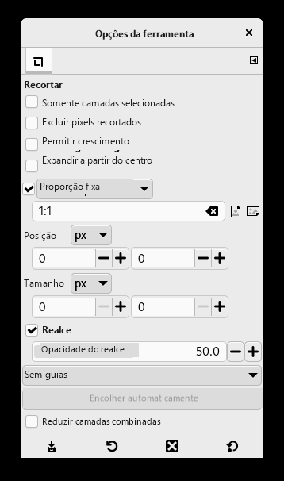

Há muitas razões para cortar uma imagem, por exemplo, montar uma imagem para preencher uma moldura, a remoção de uma parte de fundo para enfatizar o assunto, etc; Existem dois métodos para ativar a ferramenta de corte. Clique no botão na caixa de ferramentas, ou use → → na janela da imagem. Isso muda o cursor e permite que você clique e arraste uma forma retangular. O botão na caixa de ferramentas é a maneira mais fácil para chegar a qualquer das ferramentas.

Clique em um canto da área de corte desejada e arraste o mouse para criar o retângulo de corte. Você não tem que ser exato como você pode mudar a forma exata do retângulo mais tarde.
Figura 3.22. Caixa de diálogo para o corte


After completing the click and drag motion, a rectangle with special regions is shown on the canvas. As the cursor is moved over the different areas of the selected crop area, the cursor changes. You can then drag the rectangle's corners or edges to change the dimensions of the selected area. As shown in the figure above, as the crop area is resized, the dimensions and ratio are shown in the status bar. Double-click inside the rectangle or press Enter to complete cropping. See Seção 4.4, “Cortar” for more information on cropping in GIMP.
If you would like to crop the image in a specific aspect ratio, such as a square, make sure the tool options are visible ( → → ). In the Tool Options dockable, check the mark next to Fixed Aspect Ratio. Type the desired aspect ratio in the text field below, such as “1:1”.
You also have buttons to change the aspect from landscape to portrait. After you set the aspect ratio, drag one of the corners of the crop rectangle to update it. The rectangle changes to the chosen ratio, and when you drag it should maintain that ratio.